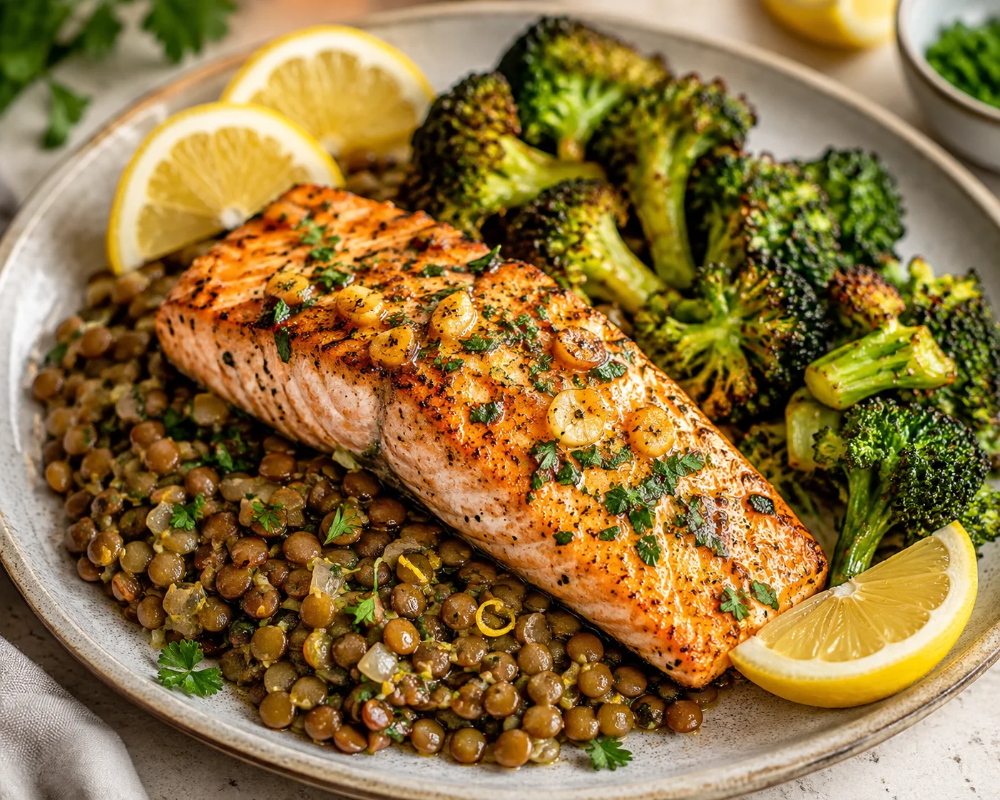

Salmon with Lentils & Roasted Broccoli

Lots of nourishing ingredients. Satisfying hearty meal that is iron rich.
Ingredients
- 4 salmon fillets (about 5–6 oz each)
- 1 cup dry green or brown lentils, rinsed
- 1 large head broccoli, cut into floretsl
- 3 cloves garlic, minced
- 2 lemons
- 2 tablespoons olive oil, divided
- 2 cups low-sodium vegetable or chicken broth
- 1 teaspoon paprika
- ½ teaspoon dried thyme
- ½ teaspoon black pepper
- ½ teaspoon salt, or to taste
- 2 tablespoons chopped fresh parsley
Steps
-
Cook the lentils: Add the rinsed lentils and broth to a saucepan. Bring
to a boil, then reduce the heat and simmer for about 20–25 minutes, or
until tender. Drain any excess liquid and set aside.
- Prepare the oven: Preheat the oven to 400°F (200°C).
-
Season the broccoli: Place the broccoli florets on a baking sheet. Toss
with 1 tablespoon olive oil, half of the minced garlic, a little salt
and black pepper. Roast for about 15–20 minutes, until tender and
lightly browned.
-
Season the salmon: Pat the salmon fillets dry. Rub them with the
remaining olive oil and garlic, paprika, thyme, salt and black pepper.
Squeeze the juice of 1 lemon over the salmon.
-
Cook the salmon: Place the salmon on a lined baking sheet and bake for
approximately 12–15 minutes, or until it flakes easily with a fork and
reaches 145°F (63°C) in the thickest part.
-
Finish the lentils: Stir the chopped parsley and a squeeze of fresh
lemon juice into the warm lentils. Taste and adjust the seasoning if
needed.
-
Serve: Spoon the lentils onto each plate and top with the salmon. Add
the roasted broccoli alongside and garnish with fresh parsley and wedges
from the remaining lemon.
Home